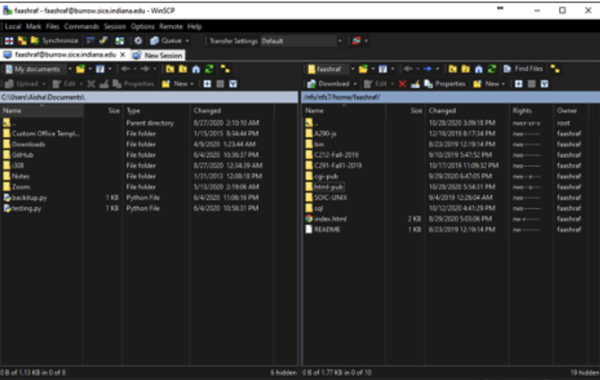

Lesson 7-1
WinSCP
Similar to on Mac, Windows has the equivalent tools that you can use to access a remote server and work with
files. We will first start with WinSCP, which can be equated to CyberDuck in function.
This program is used to transfer files between your local machine and the server you are working from. The
nice thing about WinSCP is that on the left side, you can browse your local machine, so wherever you choose
to store your files, you can look at it on the left side. The right side is the server, and it is displayed
in the same way as if you were using it like a computer. (See Figure 7A for an illustration of this)

Figure 7A: WinSCP is basically CyberDuck for Windows, however, you can
view both the server and your local machine in the same window. This can be helpful when you are working
with multiple files or want to compare what you have locally vs on the server.
Now let's figure out how to set WinSCP up, as well as how to use it.
First Time Setup
- Download and Install WinSCP
- Go to the Login Screen and fill out the fields as provided by your iT or Instructor.
- Hostname: silo.luddy.indiana.edu<
- Username: your IU username
- Password: your IU passphrase
- That's it! If you have done it right, you should see a screen similar to Figure 7A.
- Login to WinSCP
- On the left pane, open the local directory in which you are doing your work.
- On the right pane, open the server-side directory where you are doing your work.
- Drag the file from either side (for example, to upload to the server, select the file from the left) and place it in the opposing window. A status bar at the bottom should appear indicating how long it will take to upload the file.
Here is what you need to enter if you are an IU Student:
Duo authentication will be required before you proceed to the next step.
To log back in after closing the window, you will have to repeat the aforementioned steps.
Uploading/Downloading Files
If you're an IU student, you will have to do Duo authentication before the upload processes.
That is all that there really is to WinSCP. You can see the utility of it and how it can be used to help us prevent merge conflicts.
Next we shall look at puTTY.